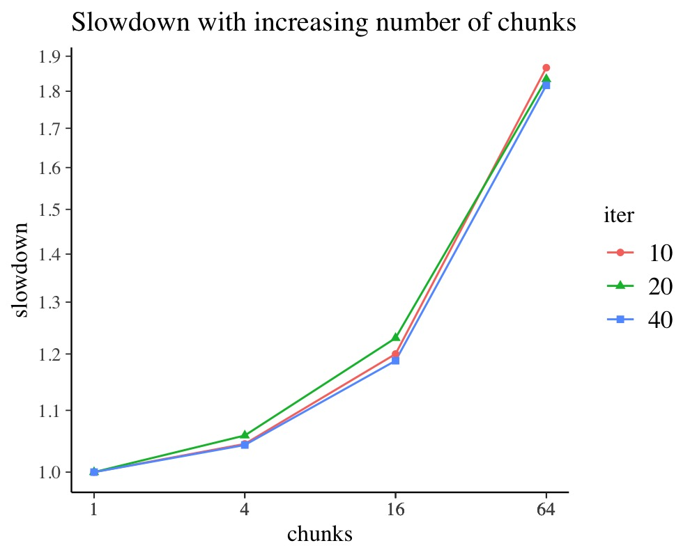
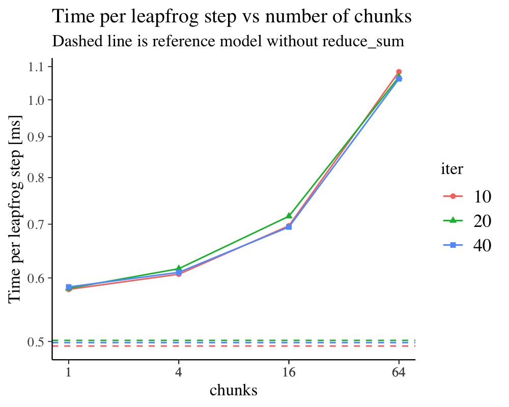
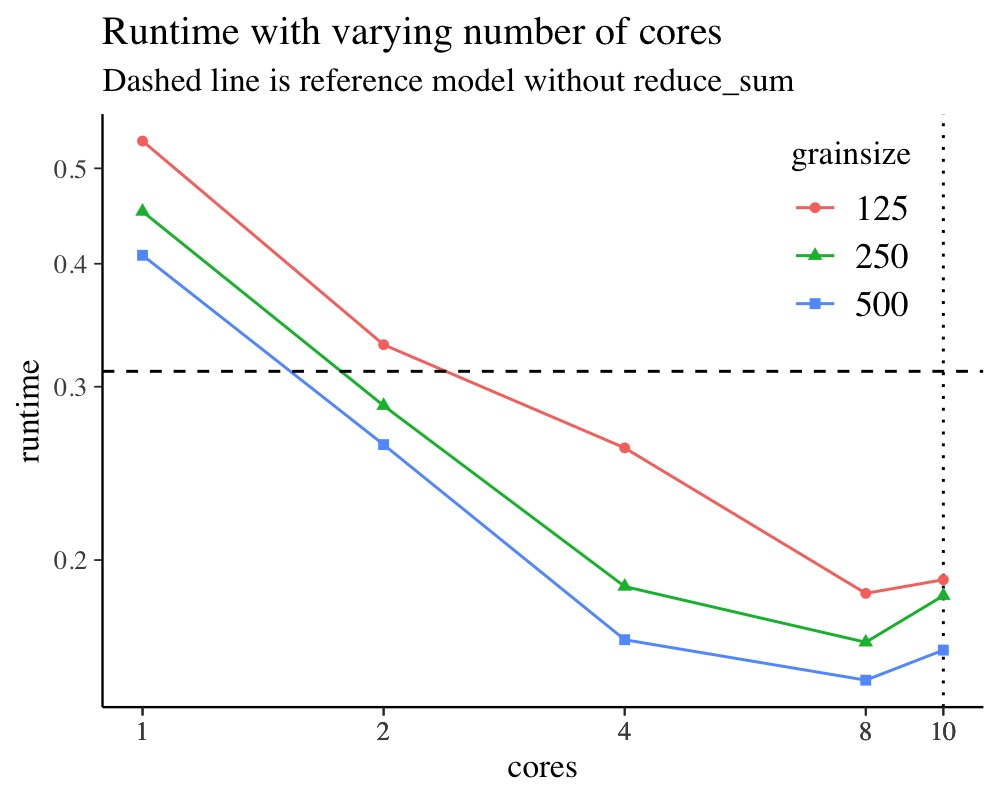
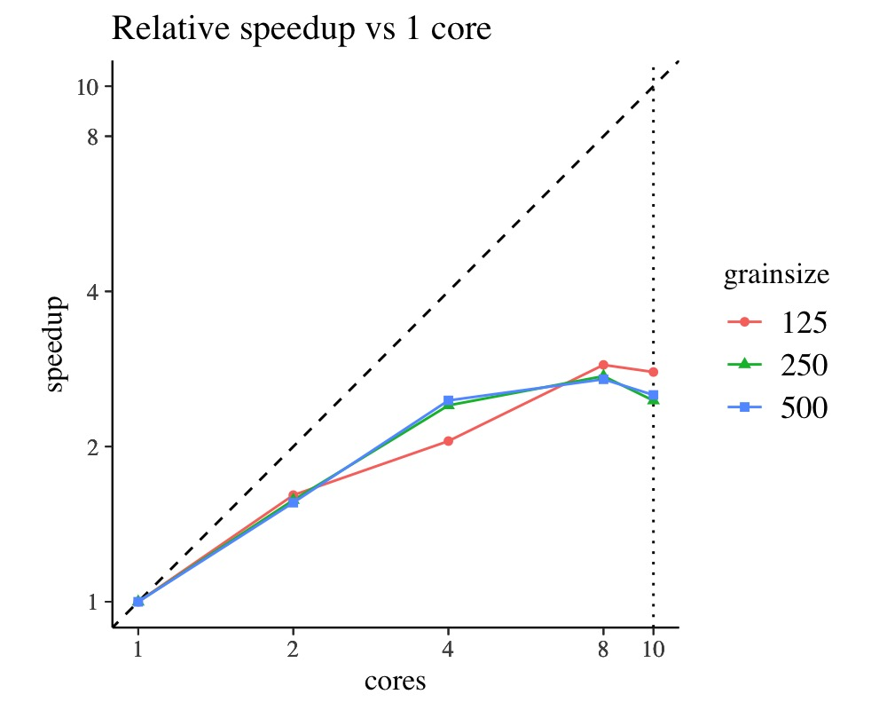

vignettes/brms_threading.Rmd
brms_threading.RmdFull Bayesian inference is a computationally very demanding task and often we wish to run our models faster in shorter walltime. With modern computers we nowadays have multiple processors available on a given machine such that the use of running the inference in parallel will shorten the overall walltime. While between-chain parallelization is straightforward by merely launching multiple chains at the same time, the use of within-chain parallelization is more complicated in various ways. This vignette aims to introduce the user to within-chain parallelization with brms, since its efficient use depends on various aspects specific to the users model.
Assuming you have a brms model which you wish to evaluate faster by using more cores per chain, for example:
fit_serial <- brm(
count ~ zAge + zBase * Trt + (1|patient),
data = epilepsy, family = poisson(),
chains = 4, cores = 4, backend = "cmdstanr"
)Then you can simply add threading support to an existing model with
the update mechanism as follows, provided your stan version
is at least 2.26 (whether using rstan or
cmdstan):
fit_parallel <- update(
fit_serial, chains = 2, cores = 2,
backend = "cmdstanr", threads = threading(2)
)The example above assumes that 4 cores are available which are best used without within-chain parallelization by running 4 chains in parallel. When using within chain parallelization it is still advisable to use just as many threads in total as you have CPU cores. It’s thus sensible in this case to reduce the number of chains running in parallel to just 2, but allow each chain to use 2 threads. Obviously this will reduce the number of iterations in the posterior here as we assumed a fixed amount of 4 cores.
epilepsy
example above is actually too small to gain in speed (just a few seconds
per chain on this machine).The within-chain parallelization implemented in brms
is based on the reduce_sum facility in Stan. The basic
principle that reduce_sum uses is to split a large
summation into arbitrary smaller partial sums. Due to the commutativity
and associativity of the sum operation these smaller partial sums can be
evaluated in any order and in parallel from one another.
brms leverages reduce_sum to evaluate the
log-likelihood of the model in parallel as for example
\[ \begin{aligned} l(y|\theta) &= \sum_{i=1}^N l_i(y_i| \theta) \\ &= \sum_{i=1}^{S_1} l_i(y_i| \theta) + \sum_{i=S_1+1}^N l_i(y_i| \theta). \end{aligned} \]
As a consequence, the within-chain parallelization requires mutually independent log-likelihood terms which restricts its applicability to some degree.
Furthermore, the within-chain parallelization is only applicable to the evaluation of the data likelihood while all other parts of the model, for example priors, will remain running serially. Thus, only a partial fraction of the entire Stan model will run in parallel which limits the potential speedup one may obtain. The theoretical speedup for a partially in parallel running program is described by Amdahl‘s law. For example, with 90% of the computational load running in parallel one can essentially double the execution speed with 2 cores while 8 cores may only speedup the program by at most 5x. How large the computational cost of the log-likelihood is in relation to the entire model is very dependent on the model of the user.
In practice, the speedups are even smaller than the theoretical
speedups. This is caused by the additional overhead implied by forming
multiple smaller sums than just one large one. For example, for each
partial sum formed the entire parameter vector \(\theta\) has to be copied in memory for
Stan to be able to calculate the gradient of the log-likelihood. Hence,
with more partial sums, more copying is necessary as opposed to
evaluating just one large sum. Whether the additional copying is indeed
relevant depends on the computational cost of the log-likelihood of each
term and the number of parameters. For a model with a computationally
cheap normal log-likelihood, this effect is more important than for a
model with a Poisson log-likelihood, and for multilevel models with many
parameters more copying is needed than for simpler regression models. It
may therefore be necessary to form sufficiently large partial sums to
warrant an efficient parallel execution. The size of the partial sums is
referred to as the grainsize, which is set to a reasonable
default value. However, for some models this tuning parameter requires
some attention from the user for optimal performance.
Finally, it is important to note that by default the exact size and
order of the partial sums is not stable as it is adjusted to the load of
the system. As a result, exact numerical reproducibility is not
guaranteed by default. In order to warrant the same size and order of
the partial sums, the static option must be used and set to
TRUE, which uses a deterministic scheduler for the parallel
work.
As a toy demonstration, we use here a multilevel Poisson model. The model is a varying intercept model with \(10^{4}\) data observation which are grouped into \(1000\) groups. Each data item has \(3\) continuous covariates. The simulation code for the fake data can be found in the appendix and it’s first \(10\) rows are:
kable(head(fake, 10), digits = 3)| g | x1 | x2 | x3 | theta | eta | mu | y |
|---|---|---|---|---|---|---|---|
| 382 | 0.496 | 0.623 | 0.069 | -0.262 | 0.510 | 0.248 | 0 |
| 578 | -0.748 | -0.300 | -0.768 | -0.903 | -0.032 | -0.934 | 0 |
| 772 | -1.124 | -0.161 | -0.882 | -1.047 | -0.551 | -1.598 | 1 |
| 774 | 0.992 | -0.593 | 1.007 | 1.578 | -0.045 | 1.533 | 2 |
| 729 | 0.641 | -1.563 | -0.491 | -0.291 | -1.460 | -1.751 | 0 |
| 897 | -0.085 | -0.531 | -0.978 | -1.296 | -0.929 | -2.226 | 0 |
| 110 | -0.772 | 1.364 | -0.629 | -1.351 | 0.124 | -1.227 | 0 |
| 248 | -1.441 | 0.699 | 1.284 | 2.072 | -1.020 | 1.053 | 1 |
| 754 | -1.320 | 0.837 | -0.137 | -0.237 | 1.452 | 1.215 | 3 |
| 682 | -1.345 | -2.673 | -1.628 | -1.146 | -0.388 | -1.534 | 0 |
The brms model fitting this data is:
model_poisson <- brm(
y ~ 1 + x1 + x2 + (1 | g),
data = fake,
family = poisson(),
iter = 500, # short sampling to speedup example
chains = 2,
prior = prior(normal(0,1), class = b) +
prior(constant(1), class = sd, group = g),
backend = "cmdstanr",
threads = threading(4),
save_pars = save_pars(all = TRUE)
)Here we have fixed the standard deviation of the between-group variation for the intercept to the true value of \(1\) as used in the simulation. This is to avoid unfavorable geometry of the problem allowing us to concentrate on computational aspects alone.
The Poisson likelihood is a relatively expensive likelihood due to the use of \(\log\Gamma\) function as opposed to, for example, a normal likelihood which does is by far less expensive operations. Moreover, this example is chosen in order to demonstrate parallelization overhead implied by a large number of parameters.
As discussed above, the key mechanism to run Stan programs with parallelization is to split the large sum over independent log likelihood terms into arbitrary smaller partial sums. Creating more partial sums allows to increase simultaneous parallel computations in a granular way, but at the same time additional overhead is introduced through the requirement to copy the entire parameter vector for each partial sum formed along with further overhead due to splitting up a single large task into multiple smaller ones.
By default, brms will choose a sensible
grainsize which defines how large a given partial
sum will roughly be. The actual chunk size is automatically tuned
whenever the default non-static scheduler is used, which is the
recommended choice to start with. As noted before, only the static
scheduler is giving fully deterministic results since the chunk size and
order of partial sums will be the same during sampling.
While we expect that the default grainsize in
brms is reasonably good for many models, it can improve
performance if one tunes the grainsize specifically to a
given model and data-set. We suggest to increase successively the number
of chunks a given data set is split into with the static scheduler and
run this on a single core. This way one can control the number of
partial sum accurately and monitor the execution time as it
increases. These experiments are run with only a single chain and very
short iteration numbers as we are not interested in the statistical
results, but rather aim to be able to explore the tuning parameter space
of the chunk size as quickly as possible. The number of iterations
needed to get reliable runtime estimates for a given chunk size will
depend on many details and the easiest way to determine this is to run
this benchmark with multiple number of iterations. Whenever their
results match approximately, then the iteration numbers are sufficient.
In order to decrease the variation between runs, we also fix the random
seed, initial value and the tuning parameters of the sampler (step size
and mass matrix).
Below is an example R code demonstrating such a benchmark. The
utility function benchmark_threading is shown and explained
in the appendix.
chunking_bench <- transform(
data.frame(chunks = 4^(0:3)),
grainsize = ceiling(N / chunks)
)
iter_test <- c(10, 20, 40) # very short test runs
scaling_chunking <- benchmark_threading(
model_poisson,
cores = 1,
grainsize = chunking_bench$grainsize, # test various grainsizes
iter = iter_test,
static = TRUE # with static partitioner
)
# run as reference the model *without* reduce_sum
ref <- benchmark_reference(model_poisson, iter_test)
# for additional data munging please refer to the appendixGraphically summarizing the results shows that with more than 8 chunks the overhead is about 10% and increasing further with more chunks. For models without many parameters, no such overhead should be observed. Furthermore, one can see that 25 and 50 iterations give similar results implying that 25 iterations suffice for stable runtime estimates for these (and the following) benchmarks. The overhead of up to 20% in this example with 16 chunks may seem large due to the scaling of the plot. One must not forget that when we start to use more CPU cores, the overhead is easily offset, but it limits the maximal speedup we can get. For example, some 2 units of computation become 2.4 units due to the overhead such that on 2 cores we don’t quite double the execution speed, but rather get a 1.6x increase in speed instead of a 2x speedup.
Considering in addition the time per leapfrog step of the NUTS
sampler shows on an absolute scale similar information as before. The
upside of this representation is that we can visualize the slowdown in
relation to the program without reduce_sum. As we
can see, the additional overhead due to merely enabling
reduce_sum is substantial in this example. This is
attributed in the specific example to the large number of random
effects.
ggplot(scaling_chunking) +
aes(chunks, slowdown, colour = iter, shape = iter) +
geom_line() + geom_point() +
scale_x_log10(breaks = scaling_chunking$chunks) +
scale_y_log10(breaks=seq(0.8, 2.5, by=0.1)) +
ggtitle("Slowdown with increasing number of chunks")
ggplot(scaling_chunking) +
aes(chunks, 1E3 * runtime/num_leapfrog, colour = iter, shape=iter) +
geom_line() + geom_point() +
scale_x_log10(breaks = scaling_chunking$chunks) +
scale_y_log10(breaks=seq(0.1, 2.0, by=0.1)) +
geom_hline(data=ref, aes(yintercept=1E3 * runtime/num_leapfrog, colour=iter), linetype=I(2)) +
ggtitle("Time per leapfrog step vs number of chunks",
"Dashed line is reference model without reduce_sum") +
ylab("Time per leapfrog step [ms]")
In practice, we are often interested in so-called “hard-scaling”
properties of the parallelization system. That is, for a fixed problem
size we would like to know how much faster we can execute the Stan
program with increasing number of threads. As nowadays CPUs usually run
with so-called hyper-threading, it is also of interest if this technique
is beneficial for Stan programs as well (spoiler alert: it’s not
useful). As we have seen before, the grainsize can have an
impact on the performance and is as such a tuning parameter. Below we
demonstrate some exemplary R code which runs a benchmark with varying
number of CPU cores and varying number of grainsizes.
num_cpu <- parallel::detectCores(logical = FALSE)
num_cpu_logical <- parallel::detectCores(logical = TRUE)
grainsize_default <- ceiling(N / (2 * num_cpu))
cores <- c(2^seq(0, floor(log2(num_cpu_logical))), num_cpu, num_cpu_logical)
cores <- sort(unique(cores))
grainsize <- c(grainsize_default, grainsize_default/2, grainsize_default/4)
grainsize <- round(grainsize)
iter_scaling <- 20
scaling_cores <- benchmark_threading(
model_poisson,
cores = cores,
grainsize = grainsize,
iter = iter_scaling,
static = FALSE
)
single_core <- transform(
subset(scaling_cores, cores == 1),
runtime_single = runtime,
num_leapfrog=NULL, runtime=NULL, cores = NULL
)
scaling_cores <- transform(
merge(scaling_cores, single_core),
speedup = runtime_single/runtime,
grainsize = factor(grainsize)
)It is important to consider the absolute runtime and the relative speedup vs. running on a single core. The relative speedup can be misleading if the single core runtime is very slow in which case speed gains on more CPUs may look overly good. Considering instead the absolute runtime avoids this problem. After all, we are interested in the shortest walltime we can get rather than any relative speedups.
ggplot(scaling_cores) +
aes(cores, runtime, shape = grainsize, color = grainsize) +
geom_vline(xintercept = num_cpu, linetype = 3) +
geom_line() + geom_point() +
scale_x_log10(breaks = scaling_cores$cores) +
scale_y_log10(breaks=seq(0.1, 1.4, by=0.1)) +
theme(legend.position = c(0.85, 0.8)) +
geom_hline(data=subset(ref, iter==iter_scaling), aes(yintercept=runtime), linetype=I(2)) +
ggtitle("Runtime with varying number of cores",
"Dashed line is reference model without reduce_sum")
ggplot(scaling_cores) +
aes(cores, speedup, shape = grainsize, color = grainsize) +
geom_abline(slope = 1, intercept = 0, linetype = 2) +
geom_vline(xintercept = num_cpu, linetype = 3) +
geom_line() + geom_point() +
scale_x_log10(breaks=scaling_cores$cores) +
scale_y_log10(breaks=scaling_cores$cores) +
theme(aspect.ratio = 1) +
coord_fixed(xlim = c(1, num_cpu_logical), ylim = c(1, num_cpu_logical)) +
ggtitle("Relative speedup vs 1 core")
The vertical dotted line marks the physical number of CPU cores on
the machine this was run. The horizontal dashed line in the plot with
absolute runtime marks the respective runtime of the model
without reduce_sum and the dashed unity line in
the plot with the relative speedup marks the theoretical maximal
speedup. We can see that there is no further reduction in execution time
when increasing the thread count to be greater than the number of
physical CPUs. Hence, the use of hyper-threading is not helpful when
aiming to maximize the speed of a Stan program. Moreover, the use of
threading outperforms the single core runtime only when using more than
4 cores in this example.
For this example, the shown grainsizes matter on some
machines but not on others, so your results may look quite different
from what is shown here. The overall speedups may not seem impressive in
this case, which is attributed in this case to the large number of
parameters relative to the number of observations. However, we can still
outperform the single core runtime when using many cores. Though the
most important advantage of threading is that with an increasing data
set size, the user has the option to use a brute-force approach to
balance the increase in walltime needed.
kable(scaling_cores, digits = 2)| grainsize | iter | cores | num_leapfrog | runtime | runtime_single | speedup |
|---|---|---|---|---|---|---|
| 125 | 20 | 1 | 620 | 0.53 | 0.53 | 1.00 |
| 125 | 20 | 2 | 620 | 0.33 | 0.53 | 1.61 |
| 125 | 20 | 4 | 620 | 0.26 | 0.53 | 2.05 |
| 125 | 20 | 8 | 620 | 0.18 | 0.53 | 2.88 |
| 125 | 20 | 10 | 620 | 0.19 | 0.53 | 2.79 |
| 250 | 20 | 1 | 620 | 0.45 | 0.45 | 1.00 |
| 250 | 20 | 2 | 620 | 0.29 | 0.45 | 1.57 |
| 250 | 20 | 4 | 620 | 0.19 | 0.45 | 2.40 |
| 250 | 20 | 8 | 620 | 0.16 | 0.45 | 2.74 |
| 250 | 20 | 10 | 620 | 0.18 | 0.45 | 2.46 |
| 500 | 20 | 1 | 620 | 0.41 | 0.41 | 1.00 |
| 500 | 20 | 2 | 620 | 0.26 | 0.41 | 1.56 |
| 500 | 20 | 4 | 620 | 0.17 | 0.41 | 2.46 |
| 500 | 20 | 8 | 620 | 0.15 | 0.41 | 2.70 |
| 500 | 20 | 10 | 620 | 0.16 | 0.41 | 2.52 |
For a given Stan model one should usually choose the number of chains and the number of threads per chain to be equal to the number of (physical) cores one wishes to use. Only if different chains of the model have relatively different execution times (which they should not have, but it occurs sometimes in practice), then one may consider the use of hyper-threading. Doing so will share the resources evenly across all chains and whenever the fastest chain finishes, the freed resources can be given to the still running chains.
set.seed(54647)
# number of observations
N <- 1E4
# number of group levels
G <- round(N / 10)
# number of predictors
P <- 3
# regression coefficients
beta <- rnorm(P)
# sampled covariates, group means and fake data
fake <- matrix(rnorm(N * P), ncol = P)
dimnames(fake) <- list(NULL, paste0("x", 1:P))
# fixed effect part and sampled group membership
fake <- transform(
as.data.frame(fake),
theta = fake %*% beta,
g = sample.int(G, N, replace=TRUE)
)
# add random intercept by group
fake <- merge(fake, data.frame(g = 1:G, eta = rnorm(G)), by = "g")
# linear predictor
fake <- transform(fake, mu = theta + eta)
# sample Poisson data
fake <- transform(fake, y = rpois(N, exp(mu)))
# shuffle order of data rows to ensure even distribution of computational effort
fake <- fake[sample.int(N, N),]
# drop not needed row names
rownames(fake) <- NULL
model_poisson <- brm(
y ~ 1 + x1 + x2 + (1 | g),
data = fake,
family = poisson(),
iter = 500, # short sampling to speedup example
chains = 2,
prior = prior(normal(0,1), class = b) +
prior(constant(1), class = sd, group = g),
backend = "cmdstanr",
threads = threading(4),
save_pars = save_pars(all = TRUE)
)
# Benchmarks given model with cross-product of tuning parameters CPU
# cores, grainsize and iterations. Models are run with either static
# or non-static scheduler and initial values are set by default to 0 on the
# unconstrained scale. Function returns a data-frame with the
# cross-product of the tuning parameters and as result column the
# respective runtime.
benchmark_threading <- function(model, cores = 1, grainsize = 1, iter = 100,
static = FALSE) {
winfo <- extract_warmup_info(model)
sims <- rstan::extract(model$fit)
init <- list(extract_draw(sims, 1))
scaling_model <- update(
model, refresh = 0,
threads = threading(1, grainsize = grainsize[1], static = static),
chains = 1, iter = 2, backend = "cmdstanr"
)
run_benchmark <- function(cores, size, iter) {
bench_fit <- update(
scaling_model, warmup=0, iter = iter,
chains = 1, seed = 1234, init = init, refresh = 0, save_warmup=TRUE,
threads = threading(cores, grainsize = size, static = static),
inv_metric=winfo$inv_metric[[1]],
step_size=winfo$step_size[[1]],
adapt_engaged=FALSE
)
lf <- sum(subset(nuts_params(bench_fit, inc_warmup=TRUE), Parameter=="n_leapfrog__")$Value)
elapsed <- sum(colSums(rstan::get_elapsed_time(bench_fit$fit)))
c(num_leapfrog=lf, runtime=elapsed)
}
cases <- expand.grid(cores = cores, grainsize = grainsize, iter = iter)
res <- with(cases, mapply(run_benchmark, cores, grainsize, iter))
cbind(cases, as.data.frame(t(res)))
}
benchmark_reference <- function(model, iter=100, init=0) {
winfo <- extract_warmup_info(model)
sims <- rstan::extract(model$fit)
init <- list(extract_draw(sims, 1))
ref_model <- update(
model, refresh = 0, threads = NULL,
chains = 1, iter = 2, backend = "cmdstanr"
)
run_benchmark_ref <- function(iter_bench) {
bench_fit <- update(
ref_model, warmup=0, iter = iter_bench,
chains = 1, seed = 1234, init = init, refresh = 0,
inv_metric=winfo$inv_metric[[1]],
step_size=winfo$step_size[[1]],
adapt_engaged=FALSE
)
lf <- sum(subset(nuts_params(bench_fit, inc_warmup=TRUE), Parameter=="n_leapfrog__")$Value)
elapsed <- sum(colSums(rstan::get_elapsed_time(bench_fit$fit)))
c(num_leapfrog=lf, runtime=elapsed)
}
ref <- sapply(iter, run_benchmark_ref)
ref <- cbind(as.data.frame(t(ref)), iter=iter)
ref
}
extract_warmup_info <- function(bfit) {
adapt <- lapply(rstan::get_adaptation_info(bfit$fit), strsplit, split="\\n")
step_size <- lapply(adapt, function(a) as.numeric(strsplit(a[[1]][[1]], " = ")[[1]][2]))
inv_metric <- lapply(adapt, function(a) as.numeric(strsplit(sub("^# ", "", a[[1]][[3]]), ", ")[[1]]))
list(step_size=step_size, inv_metric=inv_metric)
}
extract_draw <- function(sims, draw) {
lapply(sims, brms:::slice, dim = 1, i = draw, drop = TRUE)
}
scaling_chunking <- merge(scaling_chunking, chunking_bench, by = "grainsize")
single_chunk <- transform(
subset(scaling_chunking, chunks == 1),
num_leapfrog_single = num_leapfrog, num_leapfrog = NULL,
runtime_single = runtime, runtime = NULL,
grainsize = NULL, chunks=NULL
)
scaling_chunking <- transform(
merge(scaling_chunking, single_chunk),
slowdown = runtime/runtime_single,
iter = factor(iter),
runtime_single = NULL
)
ref <- transform(ref, iter=factor(iter))